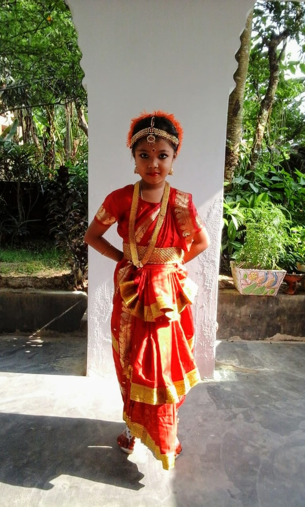

My Favorite Hobby Dancing
Dance is a performing art form consisting of purposefully selected sequences of human movement. This movement has aesthetic and symbolic value, and is acknowledged as dance by performers and observers within a particular culture.[nb 1] Dance can be categorized and described by its choreography, by its repertoire of movements, or by its historical period or place of origin.[4]
An important distinction is to be drawn between the contexts of theatrical and participatory dance,[5] although these two categories are not always completely separate; both may have special functions, whether social, ceremonial, competitive, erotic, martial, or sacred/liturgical. Other forms of human movement are sometimes said to have a dance-like quality, including martial arts, gymnastics, cheerleading, figure skating, synchronised swimming, marching bands, and many other forms of athletics.
Dance is generally, though not exclusively, performed with the accompaniment of music and may or may not be performed in time to such music. Some dance (such as tap dance) may provide its own audible accompaniment in place of (or in addition to) music. Many early forms of music and dance were created for each other and are frequently performed together. Notable exnamples of traditional dance/music couplings include the jig, waltz, tango, disco, and salsa. Some musical genres have a parallel dance form such as baroque music and baroque dance; other varieties of dance and music may share nomenclature but developed separately, such as classical music and classical ballet.
My Hobby
My Hobby are
Dance
Here are some Pictures
My first Classic performance in school

Golden Jubilee That was the best Time ever